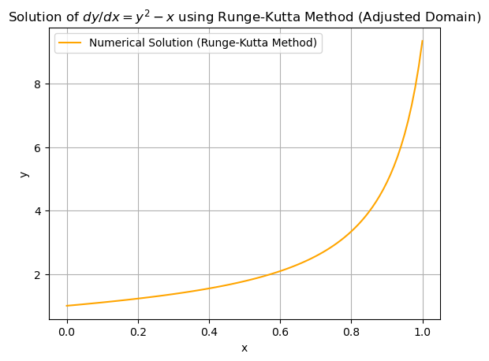
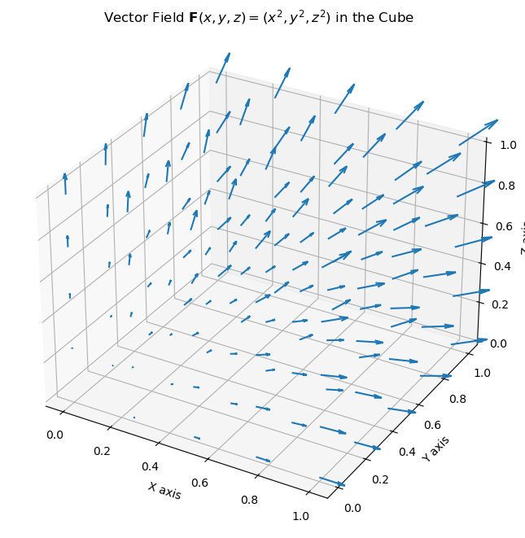
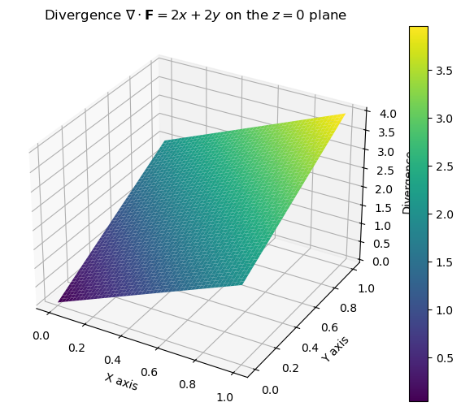
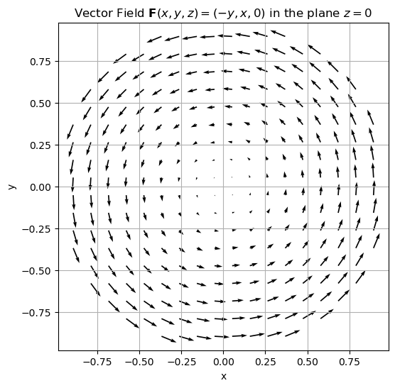
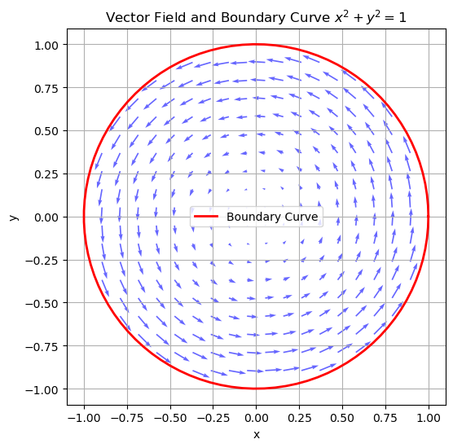
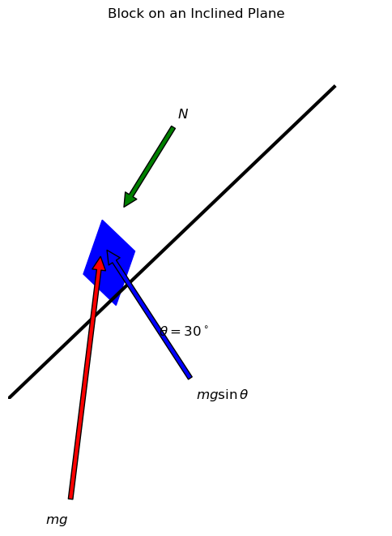

import numpy as np
import matplotlib.pyplot as plt
# Function representing the ODE dy/dx = y^2 - x
def dydx(x, y):
return y**2 - x
# Fourth-order Runge-Kutta method for numerical solution of ODE
def runge_kutta_method(dydx, x0, y0, x_end, h):
x_values = np.arange(x0, x_end + h, h)
y_values = np.zeros(len(x_values))
y_values[0] = y0
for i in range(1, len(x_values)):
x = x_values[i-1]
y = y_values[i-1]
k1 = h * dydx(x, y)
k2 = h * dydx(x + h/2, y + k1/2)
k3 = h * dydx(x + h/2, y + k2/2)
k4 = h * dydx(x + h, y + k3)
y_values[i] = y + (k1 + 2*k2 + 2*k3 + k4) / 6
return x_values, y_values
# Adjust the domain to avoid large values causing overflow
x0 = 0 # Initial x
y0 = 1 # Initial y
x_end_new = 1 # Limit the domain to avoid instability
h = 0.01 # Step size
# Solve the ODE using Runge-Kutta method with a smaller domain
x_values_rk_new, y_values_rk_new = runge_kutta_method(dydx, x0, y0, x_end_new, h)
# Plot the solution with the new domain
plt.plot(x_values_rk_new, y_values_rk_new, label="Numerical Solution (Runge-Kutta Method)", color="orange")
plt.xlabel('x')
plt.ylabel('y')
plt.title("Solution of $dy/dx = y^2 - x$ using Runge-Kutta Method (Adjusted Domain)")
plt.legend()
plt.grid(True)
plt.show()

import numpy as np
import matplotlib.pyplot as plt
from scipy.integrate import quad
# Define the parametric equations for x(t) and y(t)
def x(t):
return 3 * t**2 - 2 * t
def y(t):
return 2 * t**3 - t
# Define the velocity components
def v_x(t):
return 6 * t - 2
def v_y(t):
return 6 * t**2 - 1
# Define the acceleration components
def a_x(t):
return 6
def a_y(t):
return 12 * t
# Define the integrand for the length of the curve
def integrand(t):
return np.sqrt(v_x(t)**2 + v_y(t)**2)
# Time range for plotting
t_vals = np.linspace(0, 2, 100)
x_vals = x(t_vals)
y_vals = y(t_vals)
# Plot the parametric curve
plt.figure(figsize=(8, 6))
plt.plot(x_vals, y_vals, label='Parametric Curve: Particle Path', color='blue')
# Calculate and plot velocity and acceleration vectors at specific points
t_points = np.array([0, 0.5, 1, 1.5, 2])
v_x_vals = v_x(t_points)
v_y_vals = v_y(t_points)
a_x_vals = np.full_like(t_points, a_x(0)) # a_x is constant, so create an array with the same length
a_y_vals = a_y(t_points)
# Plot velocity vectors
plt.quiver(x(t_points), y(t_points), v_x_vals, v_y_vals, color='green', angles='xy', scale_units='xy', scale=1, label="Velocity Vectors")
# Plot acceleration vectors
plt.quiver(x(t_points), y(t_points), a_x_vals, a_y_vals, color='red', angles='xy', scale_units='xy', scale=1, label="Acceleration Vectors")
# Labels and Title
plt.xlabel('x')
plt.ylabel('y')
plt.title('Particle Motion: Parametric Curve with Velocity and Acceleration Vectors')
plt.grid(True)
plt.legend()
plt.show()
# Calculate the length of the curve numerically using integration
curve_length, _ = quad(integrand, 0, 2)
print(f"The length of the curve traced by the particle between t = 0 and t = 2 is approximately {curve_length:.2f}.")

The length of the curve traced by the particle between t = 0 and t = 2 is approximately 17.10.
import numpy as np
import matplotlib.pyplot as plt
from mpl_toolkits.mplot3d import Axes3D
# Create a grid of points in the cube
x_vals, y_vals, z_vals = np.linspace(0, 1, 5), np.linspace(0, 1, 5), np.linspace(0, 1, 5)
X, Y, Z = np.meshgrid(x_vals, y_vals, z_vals)
# Define the vector field F(x, y, z) = (x^2, y^2, z^2)
# Vector field components
F_x = X**2 # x component of the vector field
F_y = Y**2 # y component of the vector field
F_z = Z**2 # z component of the vector field
# Plot the vector field using quiver
fig = plt.figure(figsize=(8, 8))
ax = fig.add_subplot(111, projection='3d')
ax.quiver(X, Y, Z, F_x, F_y, F_z, length=0.1)
# Set labels
ax.set_xlabel('X axis')
ax.set_ylabel('Y axis')
ax.set_zlabel('Z axis')
ax.set_title('Vector Field $\\mathbf{F}(x, y, z) = (x^2, y^2, z^2)$ in the Cube')
plt.show()

import numpy as np
import matplotlib.pyplot as plt
from mpl_toolkits.mplot3d import Axes3D
# Create a grid of points in the cube
n = 50 # Increase the grid density for a smoother surface plot
x_vals, y_vals = np.linspace(0, 1, n), np.linspace(0, 1, n)
X, Y = np.meshgrid(x_vals, y_vals)
# Calculate the divergence at z = 0 plane
Divergence_z0 = 2 * X + 2 * Y # Since z = 0, the divergence simplifies to 2x + 2y
# Create a 3D surface plot for the divergence on z = 0 plane
fig = plt.figure(figsize=(8, 6))
ax = fig.add_subplot(111, projection='3d')
# Plot the surface
surface_plot = ax.plot_surface(X, Y, Divergence_z0, cmap='viridis', edgecolor='none')
# Add a color bar
fig.colorbar(surface_plot, ax=ax)
# Set labels
ax.set_xlabel('X axis')
ax.set_ylabel('Y axis')
ax.set_zlabel('Divergence')
ax.set_title('Divergence $\\nabla \\cdot \\mathbf{F} = 2x + 2y$ on the $z = 0$ plane')
plt.show()

from scipy.integrate import tplquad
# Define the divergence of the vector field
def divergence(x, y, z):
return 2 * x + 2 * y + 2 * z
# Limits of the cube: x, y, z in [0, 1]
volume_integral, _ = tplquad(divergence, 0, 1, lambda x: 0, lambda x: 1, lambda x, y: 0, lambda x, y: 1)
print(f"Volume integral of the divergence: {volume_integral:.2f}")
Volume integral of the divergence: 3.00
import numpy as np
import matplotlib.pyplot as plt
# Define the grid for the disk x^2 + y^2 <= 1
x_vals = np.linspace(-1, 1, 20)
y_vals = np.linspace(-1, 1, 20)
X, Y = np.meshgrid(x_vals, y_vals)
# Mask the points that lie outside the disk (x^2 + y^2 > 1)
mask = X**2 + Y**2 <= 1
X = X[mask]
Y = Y[mask]
# Define the vector field F(x, y, z) = (-y, x, 0) at z = 0
U = -Y # x-component of the vector field
V = X # y-component of the vector field
# Plot the vector field
plt.figure(figsize=(6,6))
plt.quiver(X, Y, U, V)
plt.title("Vector Field $\\mathbf{F}(x, y, z) = (-y, x, 0)$ in the plane $z = 0$")
plt.xlabel('x')
plt.ylabel('y')
plt.grid(True)
plt.axis('equal')
plt.show()

# Define the boundary curve (circle) x^2 + y^2 = 1
theta = np.linspace(0, 2*np.pi, 100)
x_circle = np.cos(theta)
y_circle = np.sin(theta)
# Plot the vector field and the boundary curve
plt.figure(figsize=(6,6))
plt.quiver(X, Y, U, V, color='blue', alpha=0.6)
plt.plot(x_circle, y_circle, color='red', linewidth=2, label='Boundary Curve')
plt.title("Vector Field and Boundary Curve $x^2 + y^2 = 1$")
plt.xlabel('x')
plt.ylabel('y')
plt.legend()
plt.grid(True)
plt.axis('equal')
plt.show()

# Area of the disk
area_of_disk = np.pi * 1**2 # radius = 1
curl_z = 2 # curl in the z direction
# Surface integral of the curl
surface_integral = curl_z * area_of_disk
print(f"Surface integral of the curl: {surface_integral:.2f}")
Surface integral of the curl: 6.28
import matplotlib.pyplot as plt
import numpy as np
# Create the figure and axis
fig, ax = plt.subplots(figsize=(6, 6))
# Plot the inclined plane
theta = np.radians(30)
plane_x = np.array([0, np.cos(theta)])
plane_y = np.array([0, np.sin(theta)])
ax.plot(plane_x, plane_y, color='black', lw=3)
# Plot the block
ax.add_patch(plt.Rectangle((0.2, 0.2), 0.1, 0.1, angle=-30, color="blue"))
# Plot the forces
ax.annotate(r'$mg$', xy=(0.25, 0.25), xytext=(0.1, -0.2),
arrowprops=dict(facecolor='red', shrink=0.05), fontsize=12)
ax.annotate(r'$N$', xy=(0.3, 0.3), xytext=(0.45, 0.45),
arrowprops=dict(facecolor='green', shrink=0.05), fontsize=12)
ax.annotate(r'$mg\sin\theta$', xy=(0.25, 0.25), xytext=(0.5, 0),
arrowprops=dict(facecolor='blue', shrink=0.05), fontsize=12)
# Set the axis limits
ax.set_xlim([0, 1])
ax.set_ylim([0, 0.6])
# Add labels
ax.text(0.4, 0.1, r"$\theta = 30^\circ$", fontsize=12)
ax.set_title("Block on an Inclined Plane")
# Turn off the axes
ax.axis('off')
plt.show()
